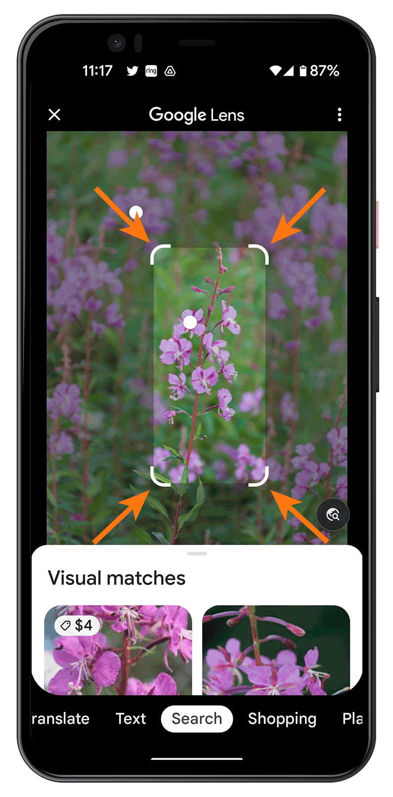

L’IA nella vita di tutti i giorni
3.1Una giornata piena di IA
Quante volte avete usato un’IA stamattina, prima di arrivare a scuola?
Prima ancora di chiedersi che cos’è l’intelligenza artificiale (IA), conviene accorgersi che la si usa già. In una giornata normale ci sono molti momenti in cui un sistema di IA lavora per te: alcuni li noti, altri lavorano di nascosto.
- 7:00, telefono che si sblocca guardandolo. Face ID riconosce il volto anche con occhiali o capelli diversi (verde: te ne accorgi).
- 7:30, altoparlante a colazione. Siri capisce la voce e risponde sul tempo (blu).
- 8:00, mappa sul telefono. Google Maps prevede il traffico e sceglie la strada più veloce (blu).
- 10:00, pagina di inglese. Google Traduttore traduce il testo da una lingua all’altra (blu).
- 13:00, schermo con video. YouTube sceglie lui che cosa mostrarti dopo (giallo: lavora di nascosto).
- 16:00, fotocamera con gli amici. Trova i volti e mette a fuoco su di loro (giallo).
- 18:00, busta di posta. Il filtro antispam di Gmail butta via la posta indesiderata prima che tu la veda (giallo).
- 21:00, finestra di chat. ChatGPT capisce la domanda del compito e scrive una risposta (blu).
- Schermata finale: «8 IA in una sola giornata. Te ne sei accorto di 5, le altre 3 lavorano senza che tu le veda». Un ultimo clic fa ricominciare.
Gli otto momenti
7:00 · Face ID. Il telefono si sblocca quando lo guardi: riconosce il tuo volto anche con occhiali, barba o capelli diversi.

7:30 · Siri. A colazione chiedi che tempo fa: l’assistente vocale capisce la tua voce e risponde.

8:00 · Google Maps. Il navigatore prevede il traffico e sceglie la strada più veloce per andare a scuola.

10:00 · Google Traduttore. Per il compito di inglese l’app traduce un testo da una lingua all’altra.

13:00 · YouTube. Finito un video, ne parte un altro: a sceglierlo è il sistema, in base a ciò che hai guardato prima.

16:00 · La fotocamera. Nella foto con gli amici lo smartphone trova i volti nell’inquadratura e mette a fuoco su di loro.
18:00 · Gmail. Il servizio di posta manda nella cartella Spam la posta indesiderata prima che tu la veda: se funziona bene, non te ne accorgi.

21:00 · ChatGPT. Per un compito chiedi aiuto a un chatbot, un programma con cui si conversa per iscritto: capisce la domanda e scrive una risposta.

E fuori dalla giornata di uno studente
In casa · Roomba. I modelli più recenti di questo aspirapolvere robot riconoscono gli ostacoli sul pavimento, come cavi e calzini, e li evitano.

In auto · guida assistita. Sistemi come quello di Tesla, fino al 2026 chiamato Autopilot e oggi Full Self-Driving (Supervised), tengono la corsia e regolano la velocità. Il guidatore deve restare attento: non è una guida autonoma.

In ospedale · analisi delle radiografie. Programmi come qXR di Qure.ai segnalano ai medici le zone sospette di una radiografia del torace. La decisione resta del medico.

3.2Riconoscere
Google Lens guarda una pianta attraverso la fotocamera e ti dice come si chiama.

Questo è il compito di riconoscere: l’IA trasforma ciò che vede o sente in un’etichetta o in un testo («è un’orchidea», «la frase è questa»). Vale per le immagini e i volti, per i suoni e la musica, per la voce.

Shazam ascolta pochi secondi di una canzone e ti dice titolo e autore.
I sottotitoli automatici di YouTube trasformano la voce di chi parla in testo scritto.

3.3Capire e produrre linguaggio
Durante una videochiamata su Google Meet compaiono in tempo reale i sottotitoli di ciò che si sta dicendo.

Questo è il compito di capire e produrre il linguaggio: l’IA non si limita a leggere le parole, le elabora. Può trascriverle, tradurle, riassumerle e rispondere a una domanda.
Otter.ai, per esempio, trascrive una riunione e ne ricava un riassunto da rileggere.

Il linguaggio è difficile per una macchina perché il significato dipende dal contesto. In «Ho visto Marco con il binocolo» non si capisce chi abbia il binocolo: una persona lo capisce solo da ciò che sa della situazione.
3.4Prevedere e consigliare
Sotto un prodotto di Amazon compare «Acquistati insieme di frequente»: il sito ti consiglia che cosa comprare in più.

Questo è il compito di prevedere e consigliare: l’IA parte da ciò che è già successo (acquisti, video visti, dati del tempo) e stima che cosa succederà o che cosa ti piacerà. È una stima, non una certezza: per questo ogni tanto sbaglia.

Funzionano così anche le app meteo: oltre ai modelli fisici dell’atmosfera usano modelli di IA per stimare il tempo delle prossime ore.
E funziona così l’antifrode della banca: conosce le tue abitudini di spesa e segnala un pagamento insolito.
L’antifrode della carta di pagamento
3.5Giocare e decidere
Sul telefono puoi installare Stockfish, un programma di scacchi che nessun giocatore umano riesce più a battere.

I giochi sono il banco di prova ideale per l’IA: hanno regole chiare e un vincitore. Questo è il compito di giocare e decidere: l’IA prova le mosse in anticipo e sceglie quella con le conseguenze migliori.
- Il computer immagina di giocare nell’angolo in alto a destra: sotto la griglia compaiono le mosse successive (X blocca in basso a sinistra e ottiene due tris possibili insieme). Il ramo diventa rosso e la scritta dice «perde».
- Si torna alla scena iniziale e il computer immagina di giocare sul lato in alto: compaiono le mosse successive fino alla griglia piena, senza tris. Il ramo diventa verde e la scritta dice «pareggia».
- Il computer sceglie il lato in alto e lo gioca davvero: la O compare nella griglia di partenza.
Non vale solo per i giochi: i taxi senza conducente di Waymo, in diverse città degli Stati Uniti, decidono di continuo quando frenare, svoltare e dare la precedenza.

3.6Creare
Su Suno scrivi «una canzone jazz sull’annaffiare le piante» e il sistema compone una canzone nuova, che nessuno aveva mai scritto.

Questo è il compito di creare: l’IA generativa parte da una richiesta scritta e produce un contenuto nuovo, invece di cercarne uno già esistente. Lo stesso vale per i testi, come le risposte del chatbot visto prima.
Midjourney, per esempio, produce immagini a partire da una descrizione.

3.7Idee sbagliate sull’IA
Un braccio robotico in fabbrica salda tutto il giorno gli stessi movimenti: è un’IA?
L’IA non è un robot. Il robot è una macchina con un corpo; l’IA è un programma (software) che può stare in un telefono, in un sito o dentro un robot. Quasi tutti gli esempi di questo capitolo non hanno corpo.
L’IA non è un cervello elettronico. Svolge compiti che per una persona richiedono intelligenza, ma non è detto che li svolga come un cervello: se sia davvero intelligente è la domanda del capitolo 4. Soprattutto, potrebbe svolgere i propri compiti in maniera meccanica e seguendo semplicemente ordini precisi.
L’IA non sa tutto. Ogni sistema è bravo in un compito e sbaglia fuori da quello: Face ID non sa tradurre, Stockfish non sa riconoscere un volto.
Errore tipico
«L’IA è un robot che pensa come noi.»
Un robot è una macchina con un corpo, l’IA è un programma: quasi sempre vive in un telefono o in un sito, e non c’è nessuna prova che «pensi» come una persona.
Errore tipico
«Un chatbot sa tutto perché è collegato a internet.»
Un chatbot può sbagliare anche quando risponde con sicurezza: scrive la risposta che gli sembra più probabile, non controlla un archivio di verità.
Ricorda
- L’IA è già presente in gran parte della giornata, ma spesso lavora di nascosto e non ce ne accorgiamo.
- Riconoscere significa trasformare ciò che l’IA vede o sente in un’etichetta o in un testo.
- Capire e produrre linguaggio vuol dire elaborare le parole, non solo leggerle: il significato dipende dal contesto.
- Prevedere e consigliare è stimare, da ciò che è già successo, che cosa accadrà o piacerà: una stima, non una certezza.
- Nei giochi l’IA prova le mosse in anticipo e sceglie quella dalle conseguenze migliori; lo stesso vale nel mondo reale.
- Creare è il compito dell’IA generativa: dalla richiesta produce un contenuto nuovo invece di cercarne uno già esistente.
- L’IA non è un robot, non è un cervello elettronico e non sa tutto: è software bravo in un compito alla volta.
3.8Un po’ di storia
3.8.1Le origini
Quando è nata l’Intelligenza Artificiale? Quando è nato il primo chatbot e il primo veicolo a guida autonoma? Quando l’IA ha iniziato a diventare di dominio pubblico?
L’intelligenza artificiale ci sembra recentissima, ma ha quasi settant’anni. Vediamo le tappe che l’hanno preparata e fatta nascere.
Prima dell’IA: gli automi (dal Seicento all’Ottocento)
Per secoli si sono costruiti automi: macchine che imitano i gesti di una persona, di solito per spettacolo. Orologiai e artigiani facevano scrivere, suonare o disegnare piccole figure meccaniche.

Il più famoso fu il Turco meccanico, mostrato nel 1770 da Wolfgang von Kempelen: sembrava giocare a scacchi da solo, ma i pezzi erano mossi da un maestro di scacchi nascosto dentro la macchina. Non era un’IA: era un inganno, e per decenni la gente ci credette, come con il cavallo Hans (capitolo 4). Fu distrutto da un incendio nel 1854.

1943 · Il primo neurone artificiale
Il neurofisiologo Warren McCulloch e il matematico Walter Pitts descrivono quello che è considerato il primo modello matematico di neurone artificiale: un elemento semplicissimo che riceve segnali, li somma e decide se «accendersi». È l’antenato delle reti neurali. Il percettrone, un neurone artificiale che regola da solo i propri valori imparando dagli esempi, arriva più tardi, con Frank Rosenblatt (1957).

1950 · Turing
Alan Turing pubblica «Computing Machinery and Intelligence» e propone il gioco dell’imitazione, poi chiamato test di Turing (capitolo 4).
1956 · Dartmouth: nasce il nome
In una conferenza estiva al Dartmouth College, negli Stati Uniti, un gruppo di ricercatori (McCarthy, Minsky, Rochester e Shannon) decide di studiare come costruire macchine che simulino l’intelligenza. Il termine «intelligenza artificiale» è di John McCarthy, e da quel momento nasce la disciplina.


3.8.2Le prime IA
1961-1962 · IBM Shoebox, il riconoscimento vocale

Il riconoscimento vocale nasce nel 1952 ai Bell Labs con Audrey, che capisce solo le cifre da 0 a 9 pronunciate da una voce sola. L’IBM Shoebox, sviluppato nel 1961 e mostrato al pubblico nel 1962, fa un passo avanti: riconosce 16 parole pronunciate ad alta voce, le dieci cifre e sei comandi, e con quelli aziona una macchina per sommare.
1965 · La prima rete neurale funzionante
Il matematico Alexey Ivakhnenko, insieme a Valentin Lapa, mette a punto il primo metodo funzionante per far imparare una rete a più livelli: per molti è la prima rete di deep learning, piccola ma funzionante.

1966 · ELIZA, il primo chatbot

ELIZA, scritto al MIT da Joseph Weizenbaum, è considerato il primo chatbot della storia. Sostituisce parole con poche regole scritte da una persona: se scrivi «mi sento triste», risponde «perché ti senti triste?». Eppure molti, soprattutto chi sapeva poco di computer, erano convinti che capisse davvero: come con Hans e con il pappagallo del capitolo 4, sembrare intelligente non è esserlo.

Negli anni Settanta e Ottanta la strada principale diventa quella dei sistemi esperti: programmi con le regole scritte da specialisti, per esempio medici, per dare consigli in un campo preciso.
3.8.3Alti e bassi
La storia dell’IA procede a ondate: grandi promesse, poi delusioni, poi nuove speranze. Le fasi di delusione si chiamano «inverni dell’IA», perché i finanziamenti si congelano e l’interesse svanisce.
Il primo inverno (1974–1980) arriva quando le promesse dei primi anni non si realizzano: un rapporto molto critico in Gran Bretagna (1973) e i tagli dei finanziamenti negli Stati Uniti fanno calare la fiducia. Negli anni Ottanta i sistemi esperti riaccendono le speranze e le aziende investono molto. Ma costano troppo da mantenere e il mercato crolla nel 1987: è il secondo inverno (1987–1993).
Le cause sono più d’una: promesse esagerate, computer ancora poco potenti, pochi dati da cui imparare e, per i sistemi esperti, regole scritte a mano costose da mantenere (capitolo 5). La svolta arriverà quando ci saranno anche i mezzi per far imparare i sistemi dagli esempi.
- 1956–1973, entusiasmo: la curva sale. Nasce il nome (Dartmouth, 1956) e arrivano le prime promesse; ELIZA (1966) fa credere a molti che le macchine capiscano.
- 1974–1980, primo inverno: la curva scende. Le promesse non si realizzano e i finanziamenti calano.
- 1980–1987, i sistemi esperti: la curva risale. Tornano le speranze e le aziende investono.
- 1987–1993, secondo inverno: la curva scende di nuovo. I sistemi esperti costano troppo da mantenere e il mercato crolla.
- 1993–2011, ripresa lenta: la curva risale piano. Nel 1997 Deep Blue batte Kasparov a scacchi.
- 2012–2021, crescita: la curva sale più rapida con il deep learning (AlexNet, 2012) e AlphaGo (2016).
- Dal 2022, impennata clamorosa: la curva schizza quasi in verticale con ChatGPT, che porta l’IA a tutti, e continua a salire fino a uscire dal grafico.
3.8.4Dalle sfide simbolo a oggi
Nei decenni successivi i giochi e i quiz sono stati le sfide simbolo: prove chiare, con un vincitore, per misurare quanto una macchina fosse brava.
1986 · Uno dei primi veicoli a guida autonoma

In Germania Ernst Dickmanns equipaggia un furgone Mercedes-Benz con telecamere e computer. Nel 1986 il furgone guida da solo e nel 1987 percorre un tratto di autostrada vuota fino a 96 km/h. Non fu l’unico: già nel 1977 in Giappone un veicolo con telecamere andava a circa 30 km/h su un percorso preparato, e negli stessi anni si costruivano veicoli simili anche negli Stati Uniti. Quale sia «il primo» dipende da che cosa si intende per guida autonoma; quello di Dickmanns è considerato il pioniere della guida autonoma ad alta velocità.
1997 · Deep Blue batte Kasparov

Il computer Deep Blue di IBM batte il campione del mondo di scacchi Garry Kasparov per 3,5 a 2,5. È la prima volta che un computer batte il campione del mondo di scacchi in un match, e la notizia fa il giro del mondo. Funziona con regole scritte da programmatori e con un calcolo velocissimo, che esamina moltissime mosse in un secondo.
Sembrò che una macchina fosse «più intelligente» di un uomo, ma lo era in un compito solo: è un’IA specializzata (capitolo 5, paragrafo 5.5.5).
2011 · Watson vince a Jeopardy!
Watson, un sistema di IBM che risponde a domande in linguaggio naturale, batte due campioni del quiz televisivo americano Jeopardy! in tre puntate, il 14, 15 e 16 febbraio 2011.

2016 · AlphaGo batte Lee Sedol
Il programma AlphaGo di DeepMind batte il campione di Go Lee Sedol per 4 a 1, a Seoul, a marzo 2016. A differenza di Deep Blue, ha imparato dagli esempi: ha guardato partite di esperti umani e poi ne ha giocate milioni contro se stesso.

2022 · I chatbot per tutti
Il 30 novembre 2022 esce ChatGPT, un chatbot gratuito e facile da usare: in due mesi arriva a circa 100 milioni di utenti (secondo una stima della banca UBS). Per la prima volta un’IA generativa è alla portata di chiunque: basta scrivere una frase.
3.8.5Perché è esplosa proprio ora
Se l’IA ha settant’anni, perché ne parliamo tanto soltanto adesso? Perché le idee c’erano da decenni, ma servivano le condizioni giuste. Sono arrivate insieme.

1 · Più potenza di calcolo. I computer sono diventati molto più veloci, soprattutto grazie alle schede grafiche (GPU), che calcolano moltissime operazioni in parallelo. Nel 2012 la rete AlexNet, che vinse la gara ImageNet di riconoscimento delle immagini con un enorme distacco, fu addestrata su due schede grafiche da gioco.
2 · Esplosione dei Big Data. Internet e gli smartphone producono ogni giorno foto, testi e voci in quantità immensa: sono gli esempi da cui un sistema può imparare. Per ImageNet servirono milioni di immagini.
3 · Modelli di machine learning migliori. Dopo anni di prove, il deep learning si dimostra molto più bravo dei metodi precedenti nel riconoscere immagini, voce e linguaggio.
4 · Archiviazione in cloud a basso costo. Conservare e condividere enormi quantità di dati su internet costa sempre meno, e questo rende possibile addestrare sistemi giganteschi.

5 · Grandi investimenti. Aziende e Stati investono somme enormi nello sviluppo dell’IA, anche in quella aperta (open source), i cui modelli sono condivisi e utilizzabili da tutti.
6 · Popolarità crescente. Più l’IA funziona, più persone la usano e più si investe: un circolo vizioso (in senso buono) che la fa crescere sempre più in fretta. ChatGPT, nel 2022, è il punto in cui questo circolo diventa visibile a tutti.
Nessuno di questi fattori da solo basta: è la combinazione che ha fatto esplodere l’IA. La curva del paragrafo «Alti e bassi» mostra proprio questa impennata.
Ricorda
- L’IA ha quasi settant’anni: dagli automi e dal primo modello di neurone artificiale arriva a Turing e al nome «intelligenza artificiale» nel 1956.
- Le prime IA riconoscono parole, imparano in piccolo e conversano con regole scritte a mano: ELIZA sembra capire ma applica soltanto regole.
- L’IA procede a ondate: due inverni, quando le promesse non si realizzano, e poi una ripresa che dal 2022 diventa un’impennata.
- Le sfide simbolo, dagli scacchi al quiz, a Go, mostrano macchine bravissime in un compito solo, fino ai chatbot per tutti del 2022.
- L’IA è esplosa ora perché sono arrivati insieme più potenza di calcolo, tanti dati, metodi migliori, cloud, investimenti e popolarità.